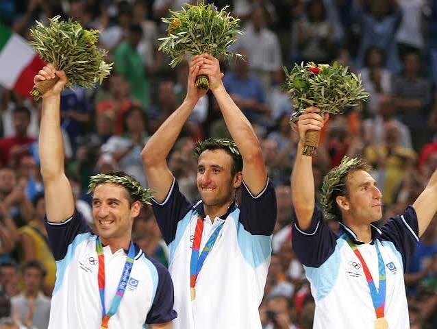
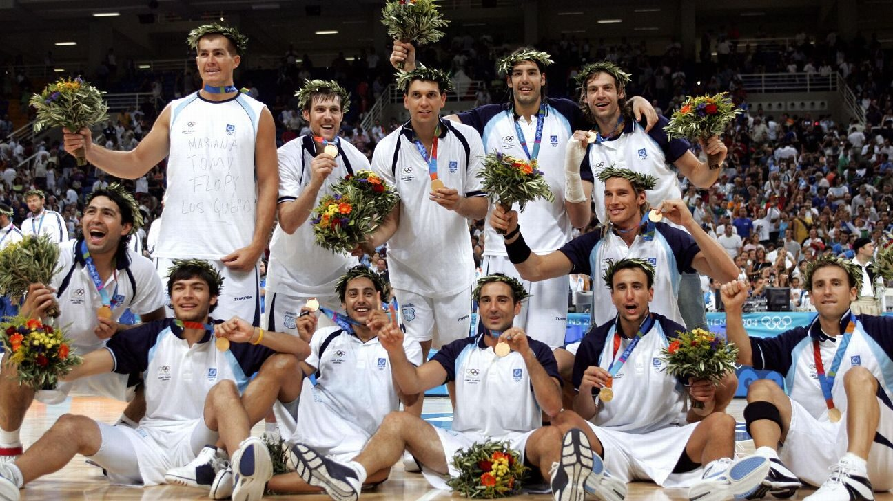
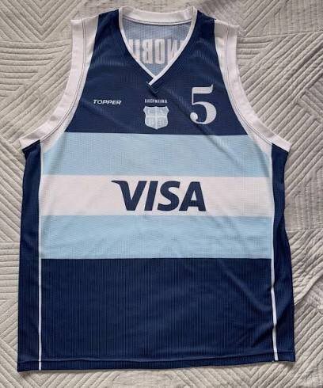
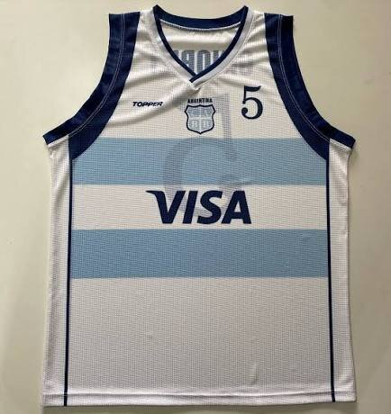
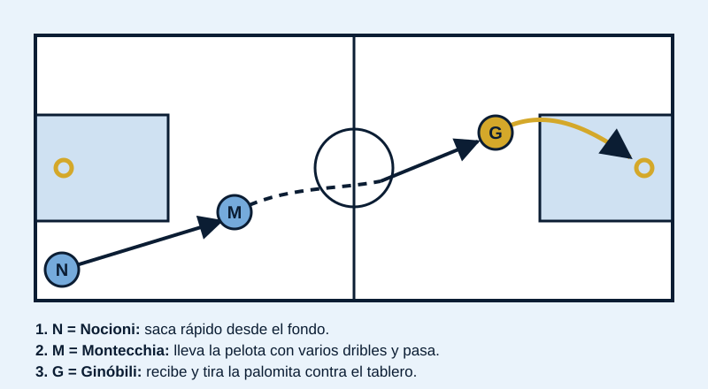

Esta página cuenta cómo el básquet argentino llegó a la élite mundial: de dónde venía, a quién tuvo que ganarle y qué pasó en cada torneo importante. Los resultados completos están en la página de Logros.
Antes de la Generación Dorada
1950: el primer campeón del Mundo
El primer Mundial de básquet de la FIBA se jugó en Buenos Aires, en el estadio Luna Park, entre el 22 de octubre y el 4 de noviembre de 1950, con diez selecciones. Argentina ganó los seis partidos que jugó y fue el único equipo invicto. Todos eran jugadores amateur: el gobierno les consiguió una licencia paga de 60 días para entrenar.
El partido decisivo fue contra Estados Unidos, que mandó a los Denver Chevrolets, un equipo de la liga AAU. Argentina ganó 64 a 50 el 3 de noviembre. Oscar Furlong fue el mejor jugador del torneo, y el capitán era Ricardo González. Según la leyenda, más de 20 mil personas llegaron a Luna Park y muchas no pudieron entrar.
Después del título: Helsinki 1952 y una proscripción
Dos años después del Mundial, en los Juegos Olímpicos de Helsinki 1952, Uruguay eliminó a Argentina en las semifinales y el equipo terminó cuarto. Ese fue el mejor resultado olímpico del básquet argentino hasta Atenas 2004.
En septiembre de 1955 un golpe militar derrocó a Perón y la nueva junta proscribió a los campeones de 1950: los acusó de haberse beneficiado con ventajas del gobierno anterior y los declaró profesionales. La prohibición se levantó diez años después, cuando la mayoría ya tenía más de treinta años. Durante décadas el título del 50 casi no se mencionó. Hoy a ese equipo se lo recuerda como la primera Generación Dorada.
Un largo camino hasta 2002
Después de aquel equipo, Argentina tardó mucho en volver a pelear arriba: no terminó mejor que sexta en un Mundial hasta 2002. Hubo señales de que algo se estaba armando: en los Juegos Panamericanos de Mar del Plata 1995, Argentina ganó la medalla de oro, con Fabricio Oberto y Rubén Wolkowyski en el plantel.
También hubo un golpe duro. En el Preolímpico de 1999, en Puerto Rico, el equipo terminó tercero y se quedó sin plaza para los Juegos de Sydney 2000. Dos años más tarde, con Rubén Magnano como entrenador y un grupo de jugadores jóvenes, llegó la reacción.
El rival: Estados Unidos y la NBA
Desde los Juegos de Barcelona 1992 los jugadores de la NBA pueden participar en los torneos de la FIBA. Estados Unidos aprovechó eso con el famoso Dream Team y, a partir de entonces, jugó cada torneo importante con estrellas de la NBA.
Cuando empezó el Mundial 2002, ese equipo llevaba 58 partidos seguidos sin perder. Nadie en el mundo había logrado ganarle a un equipo de Estados Unidos formado solo por jugadores de la NBA. Eso cambió el 4 de septiembre de 2002, en el Conseco Fieldhouse de Indianápolis.
Argentina ganó 87 a 80. Cerró el primer cuarto 34 a 21 y se fue al descanso 53 a 37. Manu Ginóbili hizo 15 puntos, Luis Scola 13 y Fabricio Oberto 11, con 9 rebotes. Del otro lado jugaban Paul Pierce, Reggie Miller, Michael Finley, Baron Davis, Andre Miller y Ben Wallace. Estados Unidos terminó ese Mundial sin medalla, con derrotas ante Argentina, Yugoslavia y España.
Dos años después, en la semifinal de Atenas 2004, Argentina le ganó de nuevo. Esa vez el rival buscaba su cuarto oro olímpico seguido desde Barcelona 1992.
Por qué un oro olímpico pesa más que un Mundial
Para Estados Unidos, los Juegos Olímpicos son el torneo más importante del básquet internacional, y se nota en el equipo que arma para cada uno. A los Juegos suele llevar a lo mejor que tiene, mientras que en los Mundiales muchas estrellas de la NBA se bajan. En 2019, por ejemplo, James Harden, Anthony Davis, Damian Lillard y Bradley Beal no viajaron a China, y Stephen Curry, Kyrie Irving, Kawhi Leonard y LeBron James habían avisado que no iban a jugar. Estados Unidos perdió ese Mundial en los cuartos de final con Francia, 89 a 79.
Por eso ganar el oro olímpico vale más que ganar un Mundial: se consigue contra los rivales más fuertes, y contra un Estados Unidos que lo toma como la gran meta. Cuando Argentina llegó a Atenas 2004, ese equipo había ganado los tres oros olímpicos anteriores. La Selección lo eliminó en la semifinal y después ganó la final. Hasta entonces, su mejor resultado olímpico había sido el cuarto puesto de Helsinki 1952.
El subcampeonato del Mundial 2002 ya había sido histórico: fue la primera medalla argentina en un Mundial desde 1950. Pero el título olímpico es el que más prestigio da, y por eso el oro de Atenas es el logro que mejor define a la Generación Dorada.
Para ser justos, el equipo de Estados Unidos de 2004 tampoco fue el mejor posible: no estaban Shaquille O'Neal, Kevin Garnett ni Jason Kidd. Aun así era el campeón olímpico vigente, y Argentina le ganó 89 a 81.

Podio de Atenas 2004: coronas de olivo, medallas de oro y ramos para los campeones olímpicos.
Cronología, torneo por torneo
2001, Neuquén: campeones de América
Argentina ganó el Campeonato FIBA Américas en Neuquén, su primer título en esa competencia, y se clasificó al Mundial. Manu Ginóbili fue elegido el mejor jugador del torneo. Antes, ese mismo año, el equipo había ganado el Campeonato Sudamericano.
El equipo tenía nueve jugadores jóvenes y la meta para el Mundial del año siguiente era terminar entre los seis primeros. Rubén Magnano dirigía y Hugo Sconochini era el capitán.
Mundial 2002, Indianápolis: subcampeones
Argentina fue la primera selección en vencer a un equipo de Estados Unidos formado solo por jugadores de la NBA. Llegó a la final y perdió con Yugoslavia 84 a 77 en tiempo suplementario.
El triunfo ante Estados Unidos se jugó en el Conseco Fieldhouse de Indianápolis. Ginóbili se lesionó durante el torneo y su baja se sintió en el final. Esa campaña cambió la forma en que el mundo veía al básquet argentino.
Juegos Olímpicos de Atenas 2004: oro
Argentina venció a Estados Unidos 89 a 81 en la semifinal y a Italia 84 a 69 en la final, el 28 de agosto de 2004. Fue la primera medalla de oro olímpica del básquet argentino.

El plantel festejando el oro olímpico en Atenas 2004.

Camiseta azul marino de la Selección en 2004.

Camiseta blanca de la Selección en 2004.
La palomita de Ginóbili
El camino al oro empezó el 15 de agosto de 2004 con una de las jugadas más famosas del deporte argentino. En el debut contra Serbia y Montenegro, Argentina perdía 82 a 81 y quedaban menos de cuatro segundos. Después de un tiro libre del rival, Andrés Nocioni sacó rápido, Alejandro Montecchia llevó la pelota hasta mitad de cancha y se la pasó a Manu Ginóbili. Marcado de cerca, Manu tiró una palomita que pegó en el tablero y entró: Argentina ganó 83 a 82.

Esquema ilustrativo de la jugada: no es una reproducción exacta de las posiciones.La palomita de Ginóbili ante Serbia y Montenegro, 15 de agosto de 2004. Si no se reproduce acá, verlo en YouTube.
El torneo no empezó fácil. En la primera fase Argentina ganó a Serbia y Montenegro 83 a 82 con la palomita de Ginóbili, perdió con España 87 a 76, ganó a China 82 a 57 y a Nueva Zelanda 98 a 94, y perdió con Italia 76 a 75. En los cuartos de final eliminó a Grecia. La semifinal fue el 27 de agosto: Ginóbili hizo 29 puntos, Argentina llegó al último cuarto con 13 de ventaja y la mantuvo. Del lado de Estados Unidos jugaban Tim Duncan, Allen Iverson, Lamar Odom y los jóvenes Dwyane Wade y LeBron James. Con ese resultado Argentina llegó por primera vez a una final olímpica de básquet, y la ganó contra Italia, con el mismo entrenador del Mundial 2002, Rubén Magnano. Hasta entonces, el mejor resultado olímpico del país era el cuarto puesto de Helsinki 1952.
Mundial 2006, Japón: cuarto puesto
Argentina llegó a las semifinales, pero perdió con España y quedó afuera de la lucha por el oro. En el partido por el bronce, jugado el 2 de septiembre de 2006 en Saitama, Estados Unidos ganó 96 a 81.
En ese partido Dwyane Wade hizo 32 puntos para Estados Unidos, 18 de ellos en el último cuarto. Pepe Sánchez fue una de las figuras argentinas.
Juegos Olímpicos de Beijing 2008: bronce
Argentina cayó en la semifinal con Estados Unidos y se recuperó en el partido por el bronce: venció a Lituania 87 a 75 el 24 de agosto de 2008. El entrenador era Sergio «Oveja» Hernández.
Fue la tercera gran medalla de la generación, después de la plata en el Mundial 2002 y del oro en Atenas 2004. Ese mismo año Argentina también ganó el torneo Diamond Ball. Hernández dirigió a la Selección entre 2005 y 2010.
Después de Beijing: la generación sigue
2011, Mar del Plata: otra vez campeones de América
Con varios de los campeones olímpicos todavía en cancha, Argentina volvió a ganar el Campeonato FIBA Américas, esta vez jugando en Mar del Plata. Fabricio Oberto, que se había retirado en 2010, volvió para ese torneo.
Juegos Olímpicos de Londres 2012: cuarto puesto
Argentina quedó tercera en su grupo después de perder 126 a 97 con Estados Unidos el 6 de agosto. En los cuartos de final eliminó a Brasil, pero volvió a perder con Estados Unidos en la semifinal, 109 a 83. En el partido por el bronce, el 12 de agosto, perdió con Rusia 81 a 77: había empatado en 64 con seis minutos por jugar.
El equipo era dirigido por Julio Lamas, con Sergio Hernández como asistente. Buscaba su tercer podio olímpico consecutivo.
Mundial 2019, China: subcampeones otra vez
Argentina volvió a una final del Mundo diecisiete años después de la primera y perdió con España 95 a 75. Luis Scola, de la Generación Dorada, seguía en el plantel, con Sergio Hernández como entrenador. Ese mismo año Argentina también ganó el oro en los Juegos Panamericanos de Lima.